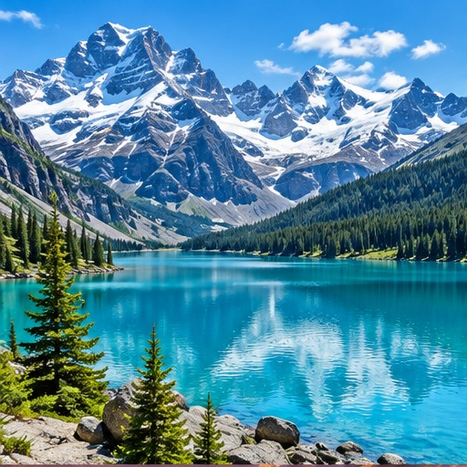
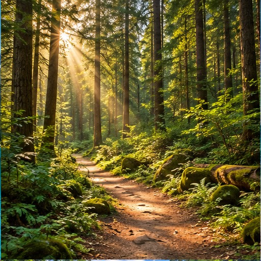
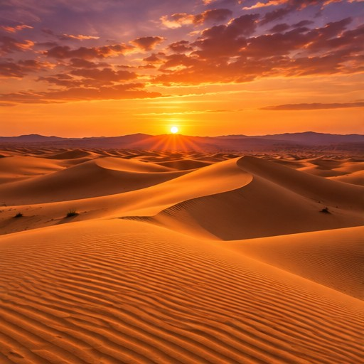
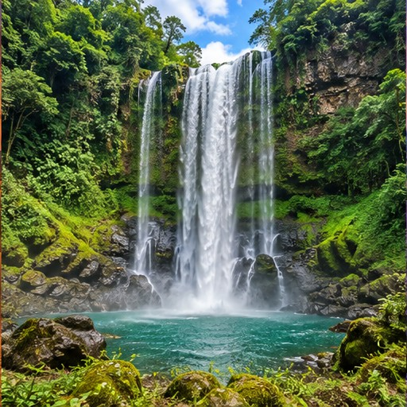
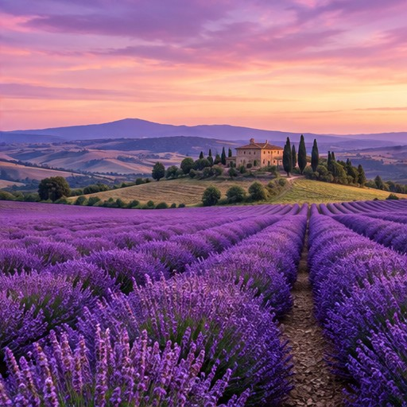

THE BEAUTY OF THE NATURAL WORLD
Places worth pausing for.
Six moments of wonder, from alpine lakes to desert light. Move your mouse over a photo or use the Tab key to explore the collection.

IN FOCUS 01 / 06
Alpine Serenity
A tranquil turquoise lake reflects the snowy peaks rising above a green mountain valley.
Explore the six images below
Now viewing Alpine Serenity.
THE COLLECTION
A world in six frames
Hover with a mouse, or press Tab and Shift + Tab to preview each photo.



